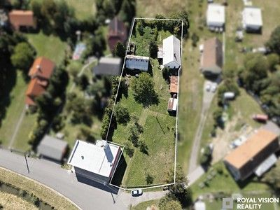
Price reduced
Prodej rodinného domu 92 m², pozemek 2612 m²
Žabeň, Frýdek-Místek
6,790,000 CZK → 6,490,000 CZK -4.42%
Original advert ↗Daily market update · 2026-11-04 · Ostrava + 15 km
Data limitation: Prices are advertised, not completed transaction prices. Disappeared adverts are NOT proof of sold or rented status. Search radius may be unverified for individual locations. "New" means first observed since a comparable complete Sreality scan, not independently verified as newly published. "New to tracker" may reflect expanded or partial portal coverage. Older Sreality IDs and known cross-lists are excluded. Additional monthly rental charges are not reliably supplied in these search cards.

Žabeň, Frýdek-Místek
6,790,000 CZK → 6,490,000 CZK -4.42%
Original advert ↗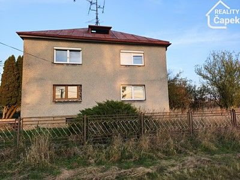
Dolní Lutyně, Karviná
4,490,000 CZK → 4,250,000 CZK -5.35%
Original advert ↗
Lutyně, Karviná
5,990,000 CZK → 5,599,000 CZK -6.53%
Original advert ↗
Brušperk, Frýdek-Místek
6,490,000 CZK → 6,490,000 CZK
Original advert ↗
Řepiště, Frýdek-Místek
Not stated → 3,200,000 CZK
Original advert ↗
Vratimov, Ostrava-město
Not stated → 14,493,000 CZK
Original advert ↗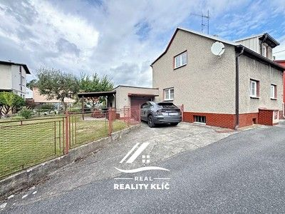
Petřkovice, Ostrava-město
5,800,000 CZK → 5,499,000 CZK -5.19%
Original advert ↗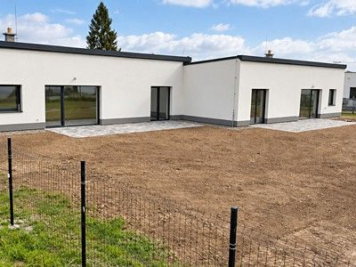
Rychvald, Karviná
6,990,000 CZK → 6,490,000 CZK -7.15%
Original advert ↗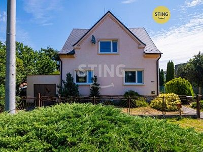
Třebovice, Ostrava-město
Not stated → 7,990,000 CZK
Original advert ↗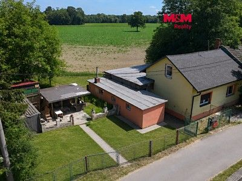
Šunychl, Karviná
4,800,000 CZK → 3,990,000 CZK -16.87%
Original advert ↗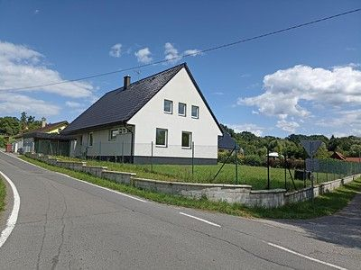
Bludovice, Karviná
Not stated → 14,800,000 CZK
Original advert ↗
Zábřeh, Ostrava-město
6,900,000 CZK → 6,200,000 CZK -10.14%
Original advert ↗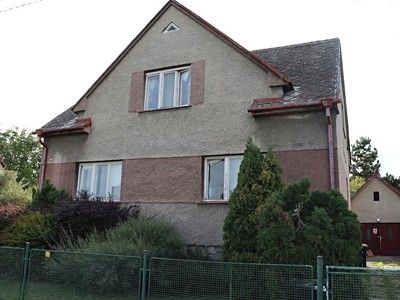
Studénka, Nový Jičín
4,700,000 CZK → 4,500,000 CZK -4.26%
Original advert ↗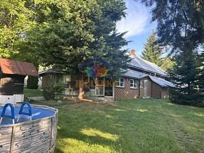
Dobrá, Frýdek-Místek
Not stated → 4,300,000 CZK
Original advert ↗
Horní Suchá, Karviná
4,650,000 CZK → 4,650,000 CZK
Original advert ↗
Orlová, Karviná
Not stated → 6,300,000 CZK
Original advert ↗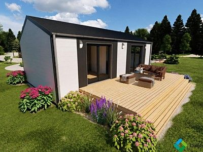
Petrovice u Karviné, Karviná
4,225,000 CZK → 4,900,000 CZK 15.98%
Original advert ↗
Horní Lhota, Ostrava-město
Not stated → 7,000,000 CZK
Original advert ↗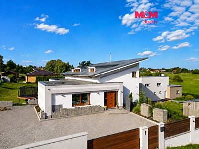
Libhošť, Nový Jičín
9,700,000 CZK → 8,500,000 CZK -12.37%
Original advert ↗Prodej domu/vily, 167 m²
Not stated → 7,990,000 CZK
Original advert ↗Prodej domu/vily, 138 m²
Not stated → 14,493,000 CZK
Original advert ↗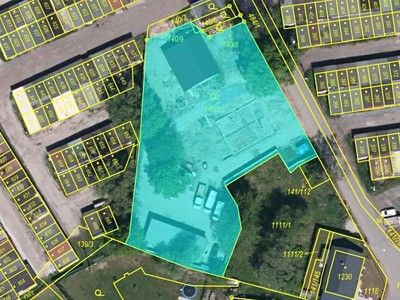
Ostrava, Ostrava-město
1,990,000 CZK → Not stated
Original advert ↗
Darkovice, Opava
7,999,000 CZK → Not stated
Original advert ↗
Rychvald, Karviná
2,100,000 CZK → Not stated
Original advert ↗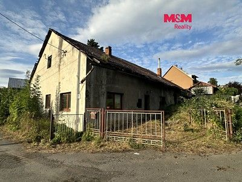
Mošnov, Nový Jičín
2,585,000 CZK → Not stated
Original advert ↗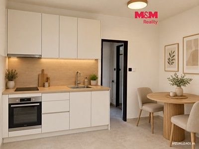
Frýdek, Frýdek-Místek
1,300,000 CZK → Not stated
Original advert ↗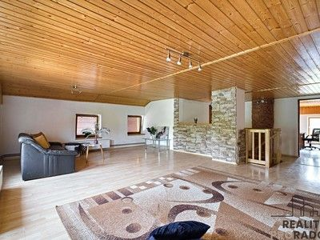
Olbramice, Ostrava-město
4,990,000 CZK → Not stated
Original advert ↗
Petřvald, Karviná
6,100,000 CZK → Not stated
Original advert ↗